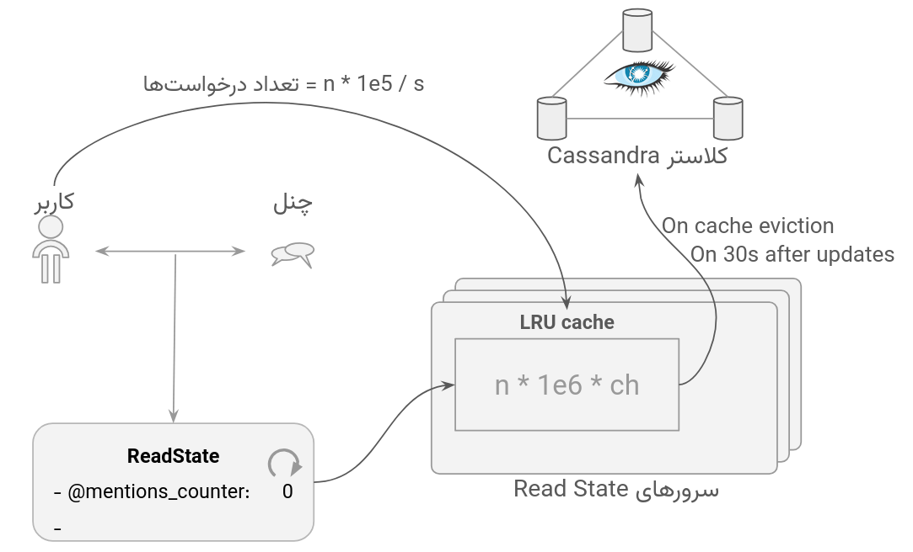
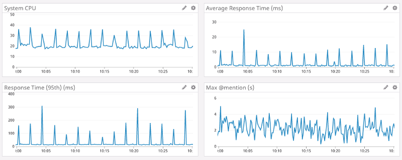
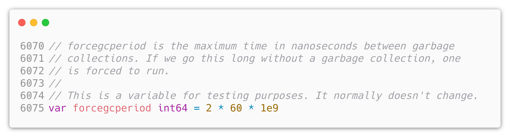
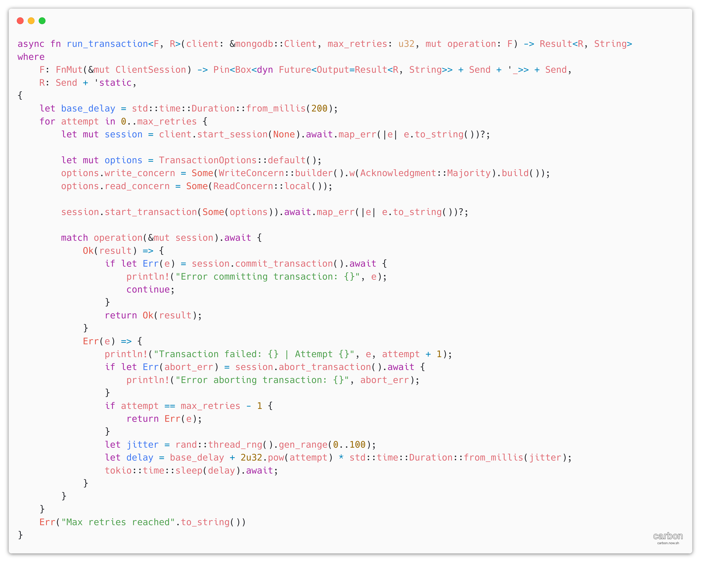

حواشی Rust
- 🐧 لینوکس
- 🛡️ توصیه NSA
- 📈 منحنی یادگیری
- 🔤 پیچیدگی syntax
بررسی بازتابها و رویدادهای مهم پیرامون زبان راست در صنعت نرمافزار و سازمانهای بزرگ.
Rust در مقابل Java
| ویژگی | Java | Rust |
|---|---|---|
| مدیریت حافظه | Garbage Collector (GC) | Ownership — بدون GC |
| سرعت اجرا | سریع (JIT) | بسیار سریع (AOT، بدون pause) |
| مصرف حافظه | بالا (JVM overhead) | بسیار کم |
| Null safety | NullPointerException! | Option<T> — بدون null |
| خطاها | Exception | Result<T,E> — صریح |
| همزمانی | Thread + lock (runtime) | Fearless — تضمین compile-time |
| منحنی یادگیری | متوسط | چالشبرانگیز در ابتدا |
| اکوسیستم | بسیار بالغ | رو به رشد (crates.io) |
مقایسه جامع راست و جاوا: مدیریت حافظه، ردپای رم، سرعت اجرا، زمان بالا آمدن و سیستم خطایابی.
Rust vs Go
https://discord.com/blog/why-discord-is-switching-from-go-to-rust
مقایسه راست و گو: بررسی تجربه واقعی دیسکورد و تاثیر توقفهای Garbage Collector بر روی تاخیر ۹۹ درصدی.
نتایج Go
-
ساخت یک endpoint برای تنظیم GCPercent در حین اجرا
- بدون اثر
- پایین آوردن سایز cache
-
تغییر ساختار cache
- پایین آمدن تایم اسکن
- بالا رفتن تایم latency روی 99th


مشکلات دیسکورد با سرویس Read States در گو؛ نوسانات دورهای تاخیر ناشی از GC و شکست راهکارهای میانی.
انتقال از Go به Rust
Rust در مقابل C و C++
C/C++ کنترل دقیق روی سختافزار میدهند اما مدیریت دستی حافظه منبع اصلی باگهای امنیتی است.
| ویژگی | C / C++ | Rust |
|---|---|---|
| ایمنی حافظه | ❌ دستی — use-after-free، buffer overflow | ✅ تضمین compile-time |
| سرعت | ✅ بسیار سریع | ✅ برابر یا سریعتر |
| Data race | ❌ ممکن است رخ دهد | ✅ غیرممکن در safe Rust |
| Null pointer | ❌ undefined behavior | ✅ Option<T> |
| Build system | Make/CMake — پیچیده | Cargo — ساده و یکپارچه |
| بلوغ اکوسیستم | چند دهه | ۱۰ ساله — رو به رشد |
طبق تحقیقات Microsoft: ~۷۰٪ آسیبپذیریهای امنیتی ناشی از خطاهای حافظه در C/C++ است.
مقایسه مستقیم با C و C++؛ ایمنی حافظه در زمان کامپایل بدون قربانی کردن سرعت و کنترل سختافزاری.
Rust در هسته لینوکس
از لینوکس نسخه ۶.۱ (دسامبر ۲۰۲۲) Rust رسماً زبان دوم هسته لینوکس شد.
- لینوس توروالدز: «این یکی از بزرگترین تغییرات در تاریخ لینوکس است»
- هدف: نوشتن device driverهای ایمنتر بدون از دست دادن کارایی
- ماژولهای Rust دسترسی کامل به kernel API دارند
- آندروید: استفاده از Rust در لایه HAL و سرویسهای سیستمی
- Google: هزاران خط کد Rust در Android AOSP
- Microsoft: بازنویسی بخشهایی از Windows kernel با Rust
هنوز مقاومتهایی در جامعه توسعهدهندگان C هسته لینوکس وجود دارد.
ورود تاریخی راست به عنوان دومین زبان رسمی هسته لینوکس از نسخه ۶.۱ به رهبری لینوس توروالدز.
توصیه NSA — ایمنی حافظه
در نوامبر ۲۰۲۲، آژانس امنیت ملی آمریکا (NSA) رسماً توصیه کرد از زبانهای memory-safe استفاده شود.
- NSA، CISA و چندین آژانس اطلاعاتی متحد این بیانیه را امضا کردند
- زبانهای توصیهشده: Rust، Go، Swift، Java، C#، Python
- زبانهای پرریسک: C و C++ (بدون قید memory-safe)
- دلیل: ~۷۰٪ آسیبپذیریهای امنیتی ناشی از باگهای حافظه
- هدف: کاهش سطح حملات سایبری در نرمافزارهای critical
White House ONCD (2024): «انتقال به زبانهای memory-safe باید اولویت صنعت نرمافزار باشد.»
بیانیه و توصیهنامه رسمی آژانس امنیت ملی آمریکا (NSA) برای حذف زبانهای با حافظه ناایمن نظیر C/C++.
منحنی یادگیری Rust
Rust یکی از سختترین زبانها برای یادگیری اولیه است — اما ارزش آن را دارد.
چالشها:
- سیستم Ownership جدید و متفاوت
- borrow checker — پیامهای خطای طولانی
- Lifetime annotations
- تفاوت
&strوString - async/await و Pin
مزایای بعد از یادگیری:
- کد صحیحتر از اول
- باگهای حافظه وجود ندارند
- ریفکتور با اطمینان
- بهترین کامپایلر راهنمایی میکند
- محبوبترین زبان Stack Overflow — ۹ سال متوالی!
کتاب رسمی «The Rust Programming Language» (aka The Book) رایگان آنلاین است.
بررسی شیب تند یادگیری راست و کلنجار رفتن با Borrow Checker و چگونگی جبران آن با قابلیت اطمینان سیستم نهایی.
پیچیدگی syntax

بررسی ساختار نحوی و ترکیبات زبانی راست و چگونگی افزایش خوانایی با عبور از مراحل مقدماتی.